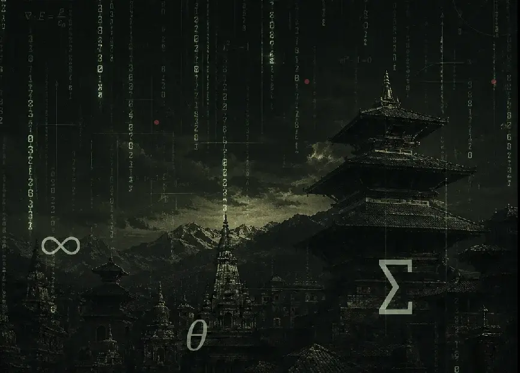
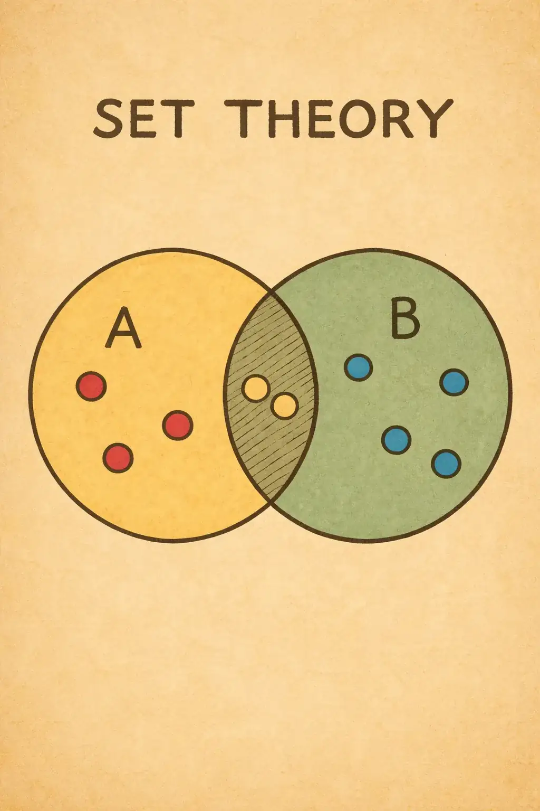
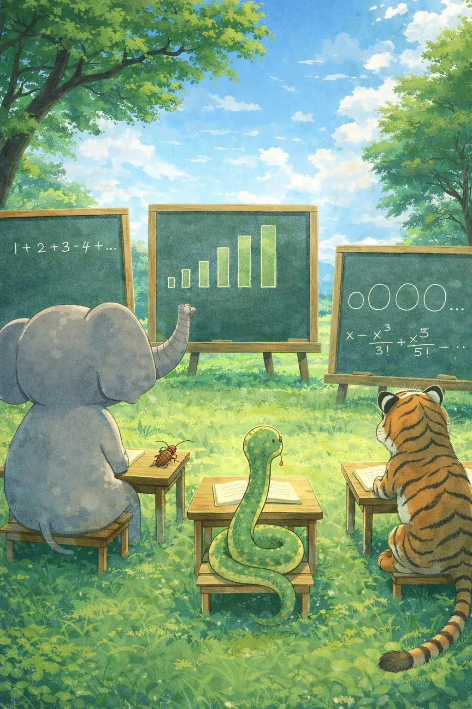

Mathematics কোনো নিয়মের বই নয় — এটা ৩৫টা গল্প, যেখানে কেউ একজন একটা সত্যিকারের problem-এর সমাধান খুঁজেছিল।
Exam পাশ করার জন্য নয়, নিজের curiosity থেকে Mathematics শেখো — Exam আসবে, যাবে, কিন্তু curiosity সারাজীবন তোমার সঙ্গে থেকে যাবে।
Sets and Relations থেকে শুরু করে Statistics পর্যন্ত — প্রতিটা chapter শুরু হয় সেই আসল problem দিয়ে, যেটা বহু বছর আগে কাউকে বাধ্য করেছিল একটা নতুন idea আবিষ্কার করতে, আজ যেটা শুধু মুখস্থ করার একটা formula হয়ে গেছে।
ছটা foundation, ৩৫টা chapter — Algebra · Trigonometry · Geometry · Differential Calculus · Integral Calculus · Data Science।
তোমার ভবিষ্যৎ, তোমার ভাষায়। আজ থেকেই শুরু করো।
Contact Dr. Samudra Dasgupta directly
Chat on WhatsAppState Boards · CBSE · ICSE · IIT · NEET · Quantum Computing

Sets and Relations
ভাগ করতে তো সবাই পারে। কিন্তু ভাগ করাটাই যে mathematics — জানতে?
মাছের বাজারে গেছ কখনো? ইলিশ একদিকে, রুই আরেকদিকে, চিংড়ি আলাদা। কেউ শিখিয়ে দেয়নি — তবু ভাগটা হয়েই যায়। এই পরিষ্কার ভাগ করাটারই নাম set। শর্ত একটাই — rule-টা হতে হবে একদম স্পষ্ট। "Even numbers" — স্পষ্ট। কিন্তু "ক্লাসের ভালো ছাত্র"? একজন স্যারের চোখে যে ভালো, আরেকজনের চোখে নাও হতে পারে। তাই ওটা set নয়।
এবার একটা মজার প্রশ্ন। একদিকে সব সংখ্যা — ১, ২, ৩, ৪... আর অন্যদিকে শুধু even numbers — ২, ৪, ৬, ৮...। কোন দলে বেশি? মনে হচ্ছে প্রথম দলে, তাই না — even তো তার অর্ধেক! কিন্তু দাঁড়াও। ১-এর সাথে ২ জোড়া বাঁধো, ২-এর সাথে ৪, ৩-এর সাথে ৬। প্রতিটা সংখ্যার জন্য একটা করে even number থাকছে — একটাও বাকি পড়ছে না! তাহলে বেশি কে? Infinity নিয়ে ভাবলেই এমন অদ্ভুত কাণ্ড ঘটে। Mathematicians শেষে দেখালেন — infinity-রও ছোট-বড় আছে! এমন একটা সহজ প্রশ্ন পরে পুরো mathematics-এর ভিতটাই কাঁপিয়ে দিয়েছিল। ভিত সারাতে rule-গুলো নতুন করে লিখতে হলো। সেই rule-এর উপরেই আজকের সব mathematics দাঁড়িয়ে আছে।
আর relation? Set বলে — কে দলে আছে, কে নেই। Relation বলে — কার সাথে কার যোগ। "রাজু প্রিয়ার চেয়ে লম্বা" — একটা relation। "একই ক্লাসে পড়ে" — এটাও। ভেবে দেখো — এই একটা relation-ই পুরো স্কুলটাকে ক্লাসে ক্লাসে ভাগ করে দেয়। কোন জাদুতে? সেটাই এই chapter-এর গল্প।
Rule-কে নিখুঁত করে বলতে শেখা — এটাই এই chapter-এর আসল শিক্ষা। বাকি সব mathematics এই ভিতের উপরেই দাঁড়িয়ে।
Complex Numbers
Negative-এর square root বলে কিছু হয় না — এই "অসম্ভব" জিনিসটাই কীভাবে দরকারি হয়ে গেল?
কোন সংখ্যাকে নিজে দিয়ে গুণ করলে negative আসে? Positive × positive = positive। Negative × negative-ও positive। তাহলে? বহু বছর mathematicians বলল — এমন সংখ্যা নেই, বাদ দাও। কিন্তু সমস্যাটা বারবার ফিরে আসতে থাকল।
হঠাৎ একদিন কেউ ভাবল — যদি ধরেই নিই এমন একটা সংখ্যা আছে? তার নাম দিল i, যার square হলো −১। প্রথমে মনে হলো নিছক কল্পনা, তাই নাম রাখা হলো "imaginary"। কিন্তু মজাটা হলো — এই imaginary সংখ্যা দিয়ে অঙ্ক কষলে বাস্তব, সঠিক উত্তর বেরিয়ে আসে! এই নতুন সংখ্যাদের নাম complex numbers।
আজ এই complex numbers ছাড়া electric current, signal, এমনকি তোমার মোবাইলের ভেতরের হিসেবও চলে না। ভেবে দেখো — যাকে "অসম্ভব" বলে বাদ দেওয়া হয়েছিল, সেটাই আজ engineering-এর মেরুদণ্ড। "অসম্ভব" মানে কি সত্যিই অসম্ভব, নাকি শুধু এখনো বুঝে ওঠা হয়নি?
একটা সাহসী "যদি ধরে নিই?" পুরো mathematics-কে নতুন দরজা খুলে দিতে পারে — এটাই complex numbers শেখায়।

Progressions
হাওড়া স্টেশনে ট্রেন ছাড়ছে — তার গতি বাড়ার মধ্যেই লুকিয়ে একটা সুন্দর pattern।
ট্রেনটা প্রতি সেকেন্ডে একটু একটু করে বেশি দূর যায় — সমান সমান বাড়ে। এই সমান-পা ফেলে এগোনোর নাম Arithmetic Progression, বা AP। ৩, ৭, ১১, ১৫ — প্রতিবার ৪ করে বাড়ছে। এটাই AP।
এবার অন্যরকম। একটা কাগজ ভাঁজ করলে পুরুত্ব দ্বিগুণ, আবার ভাঁজে আবার দ্বিগুণ। ২, ৪, ৮, ১৬... এখানে আর যোগ নয়, প্রতিবার গুণ হচ্ছে। এর নাম Geometric Progression, বা GP। AP আস্তে বাড়ে, GP লাফিয়ে বাড়ে।
প্রশ্ন হলো — AP-র প্রথম ১০০টা সংখ্যা যোগ করতে কি একটা একটা করে যোগ করতে হবে? না! একটা ছোট্ট trick-এ নিমেষে যোগফল বেরিয়ে আসে। ব্যাঙ্কের সুদ, EMI, জনসংখ্যা বৃদ্ধি — সবখানে এই pattern লুকিয়ে। ভেবে দেখো — চেনা একটা ছন্দকে চিনে ফেললে হিসেব কত সহজ হয়ে যায়।
চারপাশের লুকোনো pattern-কে চিনতে আর কাজে লাগাতে শেখাই progressions-এর আসল খেলা।
Quadratic Equations
ইডেন গার্ডেন্সে ব্যাটসম্যানের মারা বলটা ওঠে, তারপর নামে — এই বাঁকা পথেই লুকিয়ে quadratic।
বল সোজা ওপরে যায় না, সোজা নিচেও নামে না — একটা সুন্দর বাঁকা পথে ওঠে-নামে। এই বাঁকা পথের নাম parabola। আর যে অঙ্ক এই পথ বর্ণনা করে, তার নাম quadratic — যেখানে square-টাই সবচেয়ে বড় power।
প্রশ্ন — বলটা মাটিতে কখন পড়বে? সর্বোচ্চ কতটা উঁচুতে উঠবে? এই "কখন" আর "কতটা"-র উত্তরই দেয় quadratic। মজাটা হলো, উত্তর সাধারণত দুটো — কারণ বলটা একই উচ্চতায় দুবার থাকে, একবার ওঠার সময়, একবার নামার সময়।
শুধু ক্রিকেট নয় — জলের ফোয়ারা, লাফ, রকেটের পথ, এমনকি লাভ-ক্ষতির হিসেব, সবেতেই এই বাঁকা pattern। ভেবে দেখো — একটা সাধারণ বলের ওঠা-নামার মধ্যেই কীভাবে গোটা একটা গণিত লুকিয়ে থাকে।
বাস্তব জগতের বাঁকা পথগুলোকে সংখ্যায় ধরতে শেখা — এটাই quadratic-এর আসল খেলা।
Logarithms
১৬০০ সালে সমুদ্রে জাহাজের ক্যাপ্টেনের কাছে বিশাল সংখ্যার গুণভাগ ছিল জীবন-মরণের প্রশ্ন।
তখন আট-দশ digit-এর সংখ্যা গুণ করতে ঘণ্টার পর ঘণ্টা লাগত। একটা ভুল মানে জাহাজ ভুল পথে, আর খোলা সমুদ্রে ভুল পথ মানে মানুষের মৃত্যু। কেউ কি এই ভয়ানক গুণকে সহজ করতে পারবে? ১৬১৪ সালে এক স্কটিশ mathematician একটা জাদু বার করলেন — logarithm।
জাদুটা কী? Logarithm কঠিন গুণকে সহজ যোগে বদলে দেয়! বড় সংখ্যার গুণ মানে তাদের log-গুলো শুধু যোগ করা। যা ঘণ্টার কাজ ছিল, তা মিনিটে হয়ে গেল। ভেবে দেখো — শুধু গুণকে যোগে বদলে দিয়ে কত প্রাণ বাঁচানো গেল।
আজও ভূমিকম্পের Richter scale, শব্দের decibel, অ্যাসিডের pH — সব logarithm-এর ভাষায় লেখা। কেন? কারণ log বিশাল সংখ্যাকে ছোট, সামলানোর মতো মাপে নামিয়ে আনে।
কঠিন সমস্যাকে সহজ রূপে বদলে ফেলা — এই চালাকিটাই logarithm-এর সবচেয়ে বড় শিক্ষা।
Miscellaneous Equations
কিছু equation প্রথমে দেখে মনে হয় "অসম্ভব" — কিন্তু ঠিক কোণ থেকে দেখলেই সব খুলে যায়।
সব equation সাধারণ linear বা quadratic নয়। কখনো variable বসে থাকে power-এ, কখনো একটা সংখ্যার পূর্ণাংশ আর ভগ্নাংশ জড়িয়ে যায়। প্রথম দেখায় মনে হয় — এ তো কষা যাবে না! তারপর একটা চাবি পাওয়া যায়।
চাবিটা কী? প্রায়ই এটা একটা substitution — কঠিন অংশটাকে একটা নতুন নাম দিয়ে দাও, আর জটিল জিনিসটা চেনা quadratic হয়ে যায়। কখনো দুদিকে log নাও, কখনো দুটো equation পাশাপাশি রেখে ভাবো।
এই "অসম্ভব থেকে সহজ"-এর দূরত্বটাই এই chapter-এর মজা। প্রতিটা কঠিন problem কারো কাছে একদিন অসম্ভব ছিল। তারপর কেউ ঠিক কোণটা খুঁজে পেল। প্রশ্নটা কি সবসময় কঠিন, নাকি আমরা এখনো সঠিক কোণে দাঁড়াইনি?
ভয় না পেয়ে সঠিক কোণ খোঁজা — কঠিন equation-কে হারানোর আসল অস্ত্র এটাই।
Mathematical Induction
সারি সারি domino — প্রথমটা ঠেলে দিলে সবগুলো পড়ে। এই সহজ ছবিতেই লুকিয়ে এক শক্তিশালী প্রমাণ।
ধরো তুমি দাবি করলে — একটা নিয়ম সব সংখ্যার জন্য সত্যি। কিন্তু সংখ্যা তো অসীম, একটা একটা করে পরীক্ষা করবে কীভাবে? এখানেই আসে mathematical induction। এটা domino-র মতো কাজ করে।
দুটো জিনিস দেখাতে হয়। এক, প্রথম domino পড়ে — মানে নিয়মটা ১-এর জন্য সত্যি। দুই, যেকোনো একটা domino পড়লে তার পরেরটাও পড়ে — মানে নিয়মটা এক ধাপে সত্যি হলে পরের ধাপেও সত্যি। ব্যস! তাহলেই সব domino পড়বে।
আসল জাদুটা দ্বিতীয় ধাপে — এক থেকে পরের ধাপে যাওয়ার যোগসূত্রে। শুধু প্রথমটা পড়ল বলে সব পড়বে না, চেইনটা থাকতে হবে। ভেবে দেখো — মাত্র দুটো ধাপে অসীম সংখ্যক ঘটনা প্রমাণ করা যাচ্ছে!
অসীমকে দুটো ছোট ধাপে বেঁধে ফেলা — এটাই induction-এর সৌন্দর্য।
Permutations and Combinations
বিয়েবাড়িতে ১২ জনকে ১২টা চেয়ারে বসানোর কত রকম উপায়? গুনতে গেলে জীবন কেটে যাবে।
প্রতিটা চেয়ার আলাদা, তাই কাকে কোথায় বসাচ্ছ তাতে তফাত হয়। একটা একটা করে গুনতে গেলে সংখ্যাটা এত বিশাল যে জীবনেও শেষ হবে না। অথচ একটা ছোট্ট formula নিমেষে উত্তর দেয়। এই সাজানোর নাম permutation — যেখানে ক্রম (order) গুরুত্বপূর্ণ।
এবার অন্য প্রশ্ন — ১২ জন থেকে ৪ জনকে শুধু বেছে নিতে হবে, বসানোর দরকার নেই। এখন কে আগে কে পরে তাতে কিছু যায় আসে না। এই শুধু বেছে নেওয়ার নাম combination — যেখানে order-এর কোনো দাম নেই।
পুরো খেলাটা একটাই প্রশ্নে — order-টা কি matter করছে, নাকি করছে না? এই এক প্রশ্নের উত্তরই ঠিক করে দেয় তুমি permutation করবে না combination। Lottery, password, টিমের বাছাই — সব এখানেই।
"ক্রম কি গুরুত্বপূর্ণ?" — এই একটা প্রশ্নেই লুকিয়ে গোটা counting-এর রহস্য।
Binomial Theorem
(a+b)-এর square কি a-এর square যোগ b-এর square? এই ভুলটাই আসলে একটা সুন্দর pattern-এর দরজা।
অনেকে ভাবে power সবার উপর ভাগ হয়ে যায়। কিন্তু (a+b)-এর square মানে শুধু দুটো square নয় — মাঝে একটা 2ab লুকিয়ে থাকে! তাহলে (a+b)-কে বড় power-এ তুললে কী হয়? সব term কষে বার করা কঠিন। Binomial Theorem এখানেই বাঁচায়।
এটা একটা নিয়ম, যা বলে দেয় প্রতিটা term কী হবে আর তার সামনের সংখ্যাটা (coefficient) কত। মজার ব্যাপার — এই coefficient-গুলো একটা সুন্দর ত্রিভুজে সাজানো যায়, যার নাম Pascal's Triangle। প্রতিটা সংখ্যা তার ঠিক উপরের দুটো সংখ্যার যোগফল।
ভেবে দেখো — একটা "ভুল ধারণা" থেকে শুরু করে আমরা এমন একটা pattern পেলাম, যা probability, algebra সবখানে কাজে লাগে। কখনো কখনো ভুলই সবচেয়ে বড় শিক্ষক, তাই না?
এলোমেলো মনে হওয়া গুণের ভেতরেও যে নিখুঁত pattern থাকে — সেটাই binomial theorem দেখায়।
Determinants
চারটে সংখ্যা থেকে একটামাত্র মান — অথচ সেই একটা সংখ্যাই বলে দেয় গোটা একটা সমস্যার ভাগ্য।
কয়েকটা সংখ্যা চৌকো করে সাজিয়ে তার থেকে একটা বিশেষ সংখ্যা বার করা যায় — তার নাম determinant। মনে হয় শুধুই একটা সংখ্যা। কিন্তু এই এক সংখ্যাই অনেক কিছু ঠিক করে দেয়।
কী ঠিক করে? এই সংখ্যাটা বলে দেয় — দুটো equation-এর আদৌ কোনো সমাধান আছে কিনা। এটাই বলে দেয় একটা আকৃতির ক্ষেত্রফল কত। এমনকি এটা বলে দেয় একটা রূপান্তরে (transformation) জায়গাটা উল্টে যায় কিনা।
ভেবে দেখো — এত বড় বড় প্রশ্নের উত্তর মাত্র একটা সংখ্যায়! Mathematics খুব কম চিহ্ন দিয়ে বিশাল কাজ করতে ভালোবাসে। Determinant তারই এক চমৎকার উদাহরণ।
ছোট্ট একটা সংখ্যার মধ্যেও যে বিশাল তথ্য লুকিয়ে থাকতে পারে — determinant সেটাই শেখায়।
Matrices
মুদির দোকানের একটা সাধারণ হিসেবের টেবিল — সেটাই কীভাবে হয়ে ওঠে গণিতের শক্তিশালী হাতিয়ার?
ধরো একটা দোকানে তিনটে জিনিস, তিনটে সময়ে বিক্রি হয়। সংখ্যাগুলো সারি আর কলামে সাজালে একটা টেবিল হয়। এই সংখ্যার টেবিলটারই নাম matrix। শুধু টেবিল ভাবছ? দাঁড়াও।
দুই সপ্তাহের দুটো টেবিল যোগ করা যায় — মিল রেখে সংখ্যা যোগ করলেই হলো। এমনকি টেবিলদের গুণও করা যায়, যদিও সেই নিয়মটা একটু অন্যরকম। এই যোগ-গুণের মধ্যে দিয়েই একটা সাধারণ টেবিল হয়ে ওঠে গণনার যন্ত্র।
আজ তোমার ফোনের ছবি, গেমের graphics, Google-এর search, AI — সব matrix দিয়ে চলে। একসাথে হাজার হাজার সংখ্যা সামলানোর এর চেয়ে ভালো উপায় নেই। ভেবে দেখো — একটা হিসেবের খাতা কীভাবে গোটা ডিজিটাল দুনিয়া চালায়।
অনেক তথ্যকে একসাথে গুছিয়ে সামলানো — matrix-এর এই ক্ষমতাই একে এত জরুরি করে তোলে।
Trigonometric Identities
৩২টা identity মুখস্থ করে পরীক্ষায় গিয়ে সব ভুলে যাওয়া — এর চেয়ে ভালো উপায় কি নেই?
এক ছাত্র সারারাত ৩২টা trigonometric identity মুখস্থ করল, সকালে মনে রইল মাত্র দুটো। আরেকজন একটাও মুখস্থ করেনি, শুধু একটা মূল ধারণা থেকে দরকারমতো বানিয়ে নিল। কে ভালো করল? দ্বিতীয়জন। কেন?
কারণ identity-গুলো এলোমেলো নয় — এরা সব একটা সাধারণ ভিত থেকে আসে। একটা circle আর একটা সহজ সম্পর্ক থেকেই বাকি সব বেরিয়ে আসে। মুখস্থ করা আর বোঝা — এই দুটো সম্পূর্ণ আলাদা জিনিস।
হাজার বছর আগে ভারতে জ্যোতির্বিদরা তারা-গ্রহের অবস্থান মাপতে গিয়ে এই সম্পর্কগুলো আবিষ্কার করেছিলেন। ভেবে দেখো — আকাশ মাপতে গিয়ে জন্ম নেওয়া অঙ্ক আজও তোমার পরীক্ষায় ফিরে আসে।
মুখস্থ নয়, বোঝা — একটা ভিত থেকে সব বানিয়ে নিতে শেখাই এই chapter-এর আসল পাঠ।
Trigonometric Equations
একটা trigonometric equation-এর উত্তর একটা নয়, দুটো নয় — অসীম! কিন্তু কেন?
Quadratic equation-এর দুটো উত্তর থাকে, তারপর থামে। কিন্তু sin x = ১ লিখলে উত্তর কি শুধু ৯০ ডিগ্রি? না! ৯০-তে ঘুরে ঘুরে বারবার ফিরে আসে। তাই উত্তর অসীম।
কেন এমন হয়? কারণ trigonometry-র ভিত হলো একটা circle, আর circle-এ ঘুরতে থাকলে একই জায়গায় বারবার ফিরে আসো। প্রতি পূর্ণ পাক শেষে আবার সেই একই মান। তাই একটা উত্তর পেলে, তার সাথে পাক যোগ করলেই আরেকটা উত্তর।
তাহলে অসীম উত্তরকে সামলাব কীভাবে? একটা সাধারণ সূত্রে (general solution) সব উত্তরকে একসাথে ধরা যায়। ভেবে দেখো — অসীমকেও একটা পরিষ্কার নিয়মে বেঁধে ফেলা যায়।
circle-এর ঘোরার মধ্যেই লুকিয়ে কেন উত্তর অসীম — এটা বুঝলেই পুরো chapter সহজ।
Inverse Circular Functions
sin-এর উল্টো কাজটা কী, আর সেখানে কেন লুকিয়ে থাকে একটা বড় ফাঁদ?
sin একটা কোণ নিয়ে একটা সংখ্যা দেয়। উল্টোটা — একটা সংখ্যা থেকে কোণ ফেরত পাওয়া — এর নাম inverse circular function। কিন্তু সমস্যা হলো, একই sin-এর মান অসংখ্য কোণ থেকে আসতে পারে। তাহলে কোনটা ফেরত দেব?
এখানেই চালাকি — আমরা একটা নির্দিষ্ট ছোট এলাকা বেছে নিই, যাতে প্রতিটা মানের জন্য একটাই কোণ থাকে। এই বেছে নেওয়া এলাকার নাম principal value। এটা না করলে উত্তর গোলমাল হয়ে যেত।
আরেকটা ফাঁদ — এখানে "উল্টো এক" (inverse) মানে ভাগ নয়, একটা আলাদা কাজ। ভেবে দেখো — একটা function-কে উল্টে দিতে গেলে আগে তাকে শৃঙ্খলায় বাঁধতে হয়, নইলে উত্তর একটার বদলে অসংখ্য হয়ে যায়।
উল্টো কাজ করার আগে function-কে শাসনে আনা — inverse function-এর আসল শিক্ষা এটাই।
Properties of Triangles
শুধু তিনটে কোণ জানলেই কি ত্রিভুজটা চেনা যায়? আশ্চর্য হবে, উত্তর — না।
এক ছাত্র তিনটে কোণ লিখে বলল "ত্রিভুজ কষে ফেলেছি"। বন্ধু জিজ্ঞেস করল — বাহুটা কত লম্বা? উত্তর নেই। কারণ শুধু কোণ ত্রিভুজের চেহারা বলে, আকার নয়। একই কোণের ছোট-বড় অসংখ্য ত্রিভুজ হতে পারে।
তাহলে ত্রিভুজকে সম্পূর্ণ জানতে বাহু আর কোণ — দুটোরই দরকার। এদের মধ্যে সুন্দর সম্পর্ক আছে — বড় কোণের ঠিক উল্টোদিকে বড় বাহু। এই সম্পর্কগুলো (sine rule, cosine rule) দিয়ে জানা অংশ থেকে গোটা ত্রিভুজ বার করা যায়।
এতে লাভ কী? জমি মাপা, বাড়ি বানানো, দূরের জিনিসের মাপ — সব এই সম্পর্কের উপর দাঁড়িয়ে। ভেবে দেখো — একটা ত্রিভুজের লুকোনো নিয়মগুলো জানলে হাতে না ছুঁয়েও অনেক কিছু মাপা যায়।
অল্প তথ্য থেকে গোটা ত্রিভুজ বার করা — এই সম্পর্কগুলোই বাস্তব জগতে মাপার চাবিকাঠি।
Height and Distance
বাড়ির ছাদ থেকে দড়ি ঝুলিয়ে নয় — একটা কোণ মেপেই কীভাবে উঁচু জিনিসের উচ্চতা বার করা যায়?
উঁচু বাড়ির উচ্চতা মাপতে ছাদ থেকে দড়ি ঝোলানো বোকামি। তাহলে না ছুঁয়ে মাপব কীভাবে? উত্তর — একটা কোণ। দূরে দাঁড়িয়ে চোখ কতটা ওপরে তুলতে হচ্ছে, সেই কোণটাই চাবি।
এই কোণ আর তোমার দূরত্ব জানলে trigonometry বলে দেয় উচ্চতা কত। পুরো ব্যাপারটা একটা লুকোনো সমকোণী ত্রিভুজ — তুমি, বাড়ির গোড়া, আর বাড়ির চূড়া। সেই ত্রিভুজের একটা বাহু আর একটা কোণ থেকেই বাকিটা।
এইভাবেই পাহাড়ের উচ্চতা, নদীর চওড়া, এমনকি দূরের তারার দূরত্বও মাপা হয়েছে। ভেবে দেখো — হাত না বাড়িয়ে, শুধু চোখের কোণ মেপে গোটা পৃথিবী মাপা যায়।
ছুঁতে না পেরেও মাপা — কোণকে কাজে লাগিয়ে দূরত্ব জয় করার নাম height and distance।
Straight Line
গ্রাফ কাগজে আঁকা একটা লাইন আর algebra-র একটা equation — এরা কি একই জিনিস?
এক ছাত্র লাইন এঁকে খাতা জমা দিল, প্রশ্ন ছিল equation-এর। শিক্ষক বললেন — equation সেই মানুষকেও লাইনটা বোঝায়, যে গ্রাফটা দেখতে পাচ্ছে না। মানে? একই লাইনকে দু-ভাবে বলা যায় — ছবিতে, আর সংখ্যায়।
এই দুই ভাষার সেতু একটাই ধারণা — slope, মানে লাইনটা কতটা খাড়া। slope আর একটা বিন্দু জানলেই গোটা লাইনের equation লেখা যায়। ছবি আর algebra আসলে একই কথা, দুটো ভাষায় বলা।
এই ভাবনাটাই geometry আর algebra-কে জুড়ে দিয়েছিল — এক বিরাট আবিষ্কার। ভেবে দেখো — একটা লাইনকে সংখ্যায় লিখতে পারলে, তাকে নিয়ে হিসেব করা, ঘোরানো, মেলানো সব সহজ হয়ে যায়।
ছবি আর সংখ্যাকে এক করে দেখা — straight line থেকেই শুরু হয় সেই শক্তিশালী ভাবনা।
Circles
চাপ-পড়া হাঁড়ির ঢাকনা মেপে π বার করা গেল — কিন্তু "প্রায় ঠিক" আর "ঠিক" কি এক?
এক ভদ্রলোক ঢাকনার বেড় আর ব্যাস মেপে ভাগ করে পেলেন ৩.১৪, বললেন π মিলে গেছে। মেয়ে বলল — ঢাকনায় তো টোল খাওয়া। টোল-খাওয়া ঢাকনা কি সত্যিই circle? "প্রায়" আর "ঠিক" mathematics-এ আলাদা বাড়িতে থাকে।
তাহলে circle আসলে কী? জলে ঢিল ফেললে যে ঢেউ ছড়ায় — একটা কেন্দ্র থেকে সব বিন্দু ঠিক সমান দূরত্বে। এই "সমান দূরত্ব"-ই circle-এর একমাত্র নিয়ম। এই এক নিয়ম থেকেই তার পুরো equation বেরিয়ে আসে।
এই নিখুঁত সংজ্ঞা থেকেই আমরা বলতে পারি circle কোথায়, কত বড়, কাকে ছোঁয়। ভেবে দেখো — "কেন্দ্র থেকে সমান দূরত্ব" — এই ছোট্ট একটা শর্তই কত বড় একটা গণিত তৈরি করে দেয়।
"প্রায় ঠিক" নয়, নিখুঁত সংজ্ঞা — circle শেখায় mathematics-এ সঠিকতার দাম।
Pair of Straight Lines
দুটো আলাদা লাইনকে কি একটামাত্র equation-এ ধরা যায়? প্রশ্নটা যত সহজ, উত্তর তত মজার।
দুটো লাইন, দুটো আলাদা equation — শুধু একটা বিন্দুতে মেলে। প্রশ্ন উঠল — দুটোকে কি একসাথে একটা equation-এ লেখা যায়? প্রথমে মনে হয় অদ্ভুত প্রশ্ন। কিন্তু উত্তর — হ্যাঁ, যায়!
চালাকিটা সহজ — দুটো জিনিসের গুণফল শূন্য মানে, হয় প্রথমটা শূন্য, নয় দ্বিতীয়টা। তাই দুটো লাইনের equation-কে গুণ করে দিলে একটাই equation হয়, যা দুটো লাইনকেই ধরে। এই নতুন equation-এ power হয়ে যায় দুই।
তাহলে উল্টোটাও পারি — এমন একটা equation দেখলে বলে দিতে পারি ভেতরে কটা লাইন লুকিয়ে, তারা কোন কোণে মেলে। ভেবে দেখো — একটা equation-এর ভেতরে দুটো আলাদা লাইন চুপ করে বসে আছে।
গুণফল শূন্যের ছোট্ট চালাকিতে দুটো লাইনকে এক করা — এটাই এই chapter-এর সৌন্দর্য।
Parabola
ছাদের dish antenna উল্টো বসালে signal আসে না কেন? উত্তরেই লুকিয়ে parabola-র জাদু।
এক ভদ্রলোক dish-এর বাঁকা দিক নিচে করে বসিয়ে signal পেলেন না। উল্টে দিতেই signal ঝকঝকে। কেন? কারণ parabola-র বাঁকা পৃষ্ঠের একটা অসাধারণ গুণ আছে।
গুণটা কী? আকাশ থেকে আসা সব সমান্তরাল signal parabola-য় লেগে ঠিক একটা বিন্দুতে জড়ো হয় — তার নাম focus। সব আলো, সব signal, এক জায়গায় কেন্দ্রীভূত। তাই receiver-টা ঠিক সেই focus-এ বসাতে হয়।
এই একই কারণে টর্চ, গাড়ির হেডলাইট, বড় telescope — সব parabola-র আকারে বানানো। ভেবে দেখো — একটা বাঁকা রেখার জ্যামিতিক গুণ কীভাবে তোমার ঘরের যন্ত্রপাতিতে কাজ করছে।
সব কিছুকে এক বিন্দুতে জড়ো করা — parabola-র এই focus-ই তাকে এত কাজের করে তোলে।
Ellipse
ডিমের মতো বাঁকা ঘরে এক কোণে ফিসফিস করলে অন্য কোণে স্পষ্ট শোনা যায় — কীভাবে?
Ellipse হলো একটু চাপা circle — ডিমের মতো। কিন্তু এর একটা নয়, দুটো বিশেষ বিন্দু আছে, দুটো focus। এই দুই focus-এর মধ্যেই লুকিয়ে ellipse-এর সব জাদু।
জাদুটা কী? এক focus থেকে বেরোনো শব্দ বা আলো ellipse-এ ধাক্কা খেয়ে ঠিক অন্য focus-এ গিয়ে জড়ো হয়। তাই এক কোণের ফিসফিস অন্য কোণে স্পষ্ট। এমনকি ellipse-এর প্রতিটা বিন্দু থেকে দুই focus-এর দূরত্বের যোগফল সবসময় সমান।
সবচেয়ে অবাক করা কথা — গ্রহেরা সূর্যের চারদিকে ঠিক এই ellipse পথেই ঘোরে, সূর্য বসে থাকে এক focus-এ। ভেবে দেখো — একটা চাপা circle-এর জ্যামিতিই গোটা সৌরজগতের নিয়ম।
দুটো focus-এর লুকোনো সম্পর্ক — ellipse-কে ফিসফিস-ঘর থেকে গ্রহের কক্ষপথ পর্যন্ত জুড়ে দেয়।
Hyperbola
একটা রেখা কোনো curve-কে চিরকাল কাছে ডাকে, অথচ কখনো ছোঁয় না — এমন হয় নাকি?
এমন একটা লাইন, যাকে curve-টা এগিয়ে এগিয়ে যায়, আরও কাছে যায়, কিন্তু কোনোদিন ছোঁয় না — এর নাম asymptote। Hyperbola হলো সেই curve, যার এমন দুটো asymptote আছে। এটা ellipse-এর ঠিক উল্টো মেজাজের।
ellipse-এ দুই focus থেকে দূরত্বের যোগফল সমান থাকে। Hyperbola-য় থাকে দূরত্বের বিয়োগফল সমান। ছোট্ট এই তফাত — যোগ বনাম বিয়োগ — পুরো আকৃতিটাই বদলে দেয়। দুটো আলাদা খোলা শাখা তৈরি হয়।
GPS তোমার অবস্থান বার করে ঠিক এই hyperbola-র নিয়মে — দুটো signal-এর সময়ের তফাত থেকে। ভেবে দেখো — "কখনো না ছোঁয়া" একটা রেখাই তোমার ফোনকে বলে দেয় তুমি ঠিক কোথায়।
চিরকাল কাছে যাওয়া অথচ না ছোঁয়া — hyperbola-র এই অদ্ভুত স্বভাবই তাকে বিশেষ করে।
3D Geometry
মনে মনে একটা বিন্দু কল্পনা করা সহজ, কিন্তু কাগজে তিন-মাত্রায় জায়গা দেওয়া এত কঠিন কেন?
এক ছাত্র বলল বিন্দুটা x-এ ২, y-তে ৩, z-এ ৫ ধাপ। মুখে ঠিক, কিন্তু 3D ছবিতে দেখাতে গিয়ে হারিয়ে গেল। কারণ আমরা সমতল কাগজে অভ্যস্ত, কিন্তু আসল জগৎ তিন-মাত্রার। উপর-নিচও যোগ হয়।
এখন একটা বিন্দু চিনতে তিনটে সংখ্যা লাগে — ডান-বাম, সামনে-পিছে, উপর-নিচ। এই তিনটে দিক (axis) মিলেই space। দুটো সংখ্যায় যা করতাম, তিনটে সংখ্যায় সেটাই করি, শুধু একটা মাত্রা বেশি।
উড়োজাহাজের পথ, বাড়ির নকশা, গেমের 3D দুনিয়া — সব এই তিন-সংখ্যার জ্যামিতিতে চলে। ভেবে দেখো — সমতলের অঙ্ককে শুধু এক ধাপ বাড়িয়ে দিলেই গোটা বাস্তব জগৎকে ধরা যায়।
দুই থেকে তিন মাত্রায় পা রাখা — সমতলের ভাবনাকেই আসল জগতে নিয়ে যাওয়ার নাম 3D geometry।
Vectors
"পাঁচশো মিটার হাঁটো" — এই কথায় বন্ধু হারিয়ে যাবে। কী তথ্যটা বাদ পড়ল?
শুধু "পাঁচশো মিটার" বললে বন্ধু জিজ্ঞেস করবে — কোন দিকে? দূরত্বের সাথে দিকটাও দরকার। এই দিক-সহ পরিমাণের নাম vector — যার মাপও আছে, দিকও আছে। শুধু সংখ্যা (যেমন ওজন, তাপ) হলো scalar, তার দিক লাগে না।
বল কোন দিকে ঠেলছে, গ্রহ কোন পথে ঘুরছে, বাতাস কোন দিকে বইছে — সব দিক-নির্ভর। এদের সাধারণ সংখ্যায় ধরা যায় না। তাই এল vector, দিক আর মাপকে একসাথে সামলানোর ভাষা। দুটো vector যোগ করা মানে দুটো যাত্রা একের পর এক করা।
আজ physics, engineering, animation, রকেট — সব vector ছাড়া অচল। ভেবে দেখো — "কোন দিকে?" — এই সহজ প্রশ্নটাকে সম্মান দিতে গিয়েই জন্ম নিল গোটা একটা শক্তিশালী গণিত।
মাপের সাথে দিককে জোড়া — এই এক ভাবনাই vector-কে বাস্তব জগতের ভাষা করে তোলে।
Functions
একটা মেশিন — যাতে কিছু ঢোকাও, নির্দিষ্ট কিছু বেরোয়। এই সহজ ছবিই কি গোটা গণিতের প্রাণ?
Function একটা যন্ত্রের মতো — ভেতরে একটা কিছু দাও, বাইরে একটা নির্দিষ্ট কিছু পাও। একই input দিলে সবসময় একই output — এটাই নিয়ম। কখনো দুটো আলাদা উত্তর দেয় না। এই নির্ভরযোগ্যতাই function-এর আসল কথা।
এখন প্রশ্ন — দুটো আলাদা input কি একই output দিতে পারে? যদি না দেয়, তবে function-টা বিশেষ (injective)। আর প্রতিটা সম্ভাব্য output কি সত্যিই বেরোয়? এসব প্রশ্নই ঠিক করে function-টাকে উল্টে (inverse) ফেরত যাওয়া যাবে কিনা।
input-output-এর এই সম্পর্কই আসলে সব অঙ্কের কেন্দ্রে — parabola, sin, log, সব function। ভেবে দেখো — একটা সাধারণ "ঢোকাও-বেরোয়" যন্ত্রের ধারণাই কীভাবে গোটা calculus-এর ভিত হয়ে দাঁড়ায়।
input থেকে নির্দিষ্ট output — এই এক নিয়মেই লুকিয়ে গণিতের সবচেয়ে জরুরি ধারণা।
Limits
"পৌঁছানো" নয়, "কোন দিকে এগোচ্ছে" — এই ছোট্ট তফাতই খুলে দেয় calculus-এর দরজা।
Limit মানে গন্তব্যে পৌঁছানো নয় — কোন দিকে এগোচ্ছ সেটা। একটা সংখ্যার দিকে আরও কাছে, আরও কাছে গেলে জিনিসটা কীসের দিকে যাচ্ছে? ছুঁতে হবে না, শুধু ঝোঁকটা দেখো। এটাই limit-এর ভাবনা।
এতে লাভ কী? কিছু জায়গায় সরাসরি হিসেব ভেঙে পড়ে — যেমন ঠিক এক বিন্দুতে function-টা সংজ্ঞায়িত নয়। তখন limit বলে দেয় — আশপাশ থেকে এগোলে উত্তর কীসের দিকে যেত। ভাঙা জায়গাটা এড়িয়েও উত্তর পাওয়া যায়।
এই "কাছে যাওয়ার" ধারণাই calculus-এর ভিত — গতি, ঢাল, ক্ষেত্রফল সব এখান থেকে। ভেবে দেখো — না ছুঁয়েও, শুধু কাছে গিয়ে, কীভাবে নিখুঁত উত্তর বলে দেওয়া যায়।
পৌঁছানো নয়, এগোনোর দিক দেখা — এই সূক্ষ্ম ভাবনাই limit, আর তাই calculus-এর শুরু।
Continuity
একটা লাইন কলম না তুলে আঁকা যায় কি? এই সহজ প্রশ্নেই লুকিয়ে continuity।
Continuous মানে — কলম না তুলে পুরো curve-টা আঁকা যায়, কোনো লাফ বা ফাঁক নেই। কোথাও হঠাৎ ভেঙে গেলে, বা এক জায়গায় ফাঁক থাকলে, সেটা discontinuous। ভাবো বিদ্যুতের বিল বা ট্রেনের ভাড়া — কোথাও হঠাৎ লাফ দিলেই তা আর মসৃণ নয়।
কখন একটা function এক বিন্দুতে continuous? তিনটে জিনিস মিলতে হয় — বিন্দুটায় একটা মান থাকতে হবে, আশপাশ থেকে এগোলে একটা limit থাকতে হবে, আর সেই দুটো মিলতে হবে। একটাও না মিললেই ফাঁক বা লাফ।
কেন এত গুরুত্বপূর্ণ? কারণ মসৃণ, অবিচ্ছিন্ন জিনিস নিয়েই calculus-এর পরের কাজ। ভেবে দেখো — "কলম না তুলে আঁকা"-র মতো সহজ একটা ভাবনাকেও গণিত কত নিখুঁতভাবে সংজ্ঞায়িত করে।
ফাঁক আর লাফ চিনতে শেখা — মসৃণতার এই ধারণাই continuity-র প্রাণ।
Differentiability
একটা curve শুধু অবিচ্ছিন্ন হলেই হবে না — তাকে হতে হবে "মসৃণ", কোনো কোণ ছাড়া। তফাতটা কী?
Continuity বলে — curve-এ ফাঁক নেই। কিন্তু differentiability আরও বেশি চায় — কোথাও কোনো ধারালো কোণ থাকা চলবে না। ভাবো একটা পাহাড়ের চূড়া — সেখানে হঠাৎ দিক বদলায়। অবিচ্ছিন্ন, কিন্তু মসৃণ নয়।
কেন কোণ সমস্যা? কোণে দাঁড়ালে "কোন দিকে ঢালু" তার উত্তর একটা নয় — বাঁ দিক থেকে এক, ডান দিক থেকে আরেক। ঢাল একটাই হতে হবে, নইলে সেখানে derivative থাকে না। মসৃণ মানেই প্রতি বিন্দুতে একটাই স্পষ্ট ঢাল।
তাই প্রতিটা differentiable curve continuous, কিন্তু প্রতিটা continuous curve differentiable নয়। ভেবে দেখো — "ভাঙা নেই" আর "কোণ নেই" — এই দুটো আলাদা দাবি, আর দ্বিতীয়টা অনেক কড়া।
ফাঁক না থাকা যথেষ্ট নয়, চাই কোণহীন মসৃণতা — differentiability সেই সূক্ষ্ম শর্ত।
Derivatives
ইডেন গার্ডেন্সে বল কত জোরে যাচ্ছে — ঠিক এই মুহূর্তে? এই "ঠিক এখন"-এর উত্তরই derivative।
একটা গাড়ির গড় গতি বার করা সহজ — দূরত্ব ভাগ সময়। কিন্তু ঠিক এই মুহূর্তে গতি কত? মুহূর্তের তো সময়ই শূন্য! এই কঠিন প্রশ্নের উত্তর দেয় derivative — কোনো কিছু ঠিক এক মুহূর্তে কত দ্রুত বদলাচ্ছে।
কীভাবে? খুব ছোট্ট একটা সময় নাও, তাতে কতটা বদলাল দেখো, তারপর সময়টাকে আরও ছোট, আরও ছোট করতে থাকো — এই তো limit! এই ঝোঁকই instantaneous rate, মানে derivative। Graph-এ এটা ঠিক সেই বিন্দুর ঢাল।
গতি, বৃদ্ধি, লাভ-ক্ষতির হার — যেখানেই "কত দ্রুত বদলাচ্ছে" প্রশ্ন, সেখানেই derivative। ভেবে দেখো — "এই মুহূর্তে" বলে একটা প্রশ্ন, যার সময় শূন্য, তার উত্তরও নিখুঁতভাবে বলা যায়।
ঠিক এক মুহূর্তের পরিবর্তনের হার মাপা — derivative-এর এই ক্ষমতাই calculus-এর আসল শক্তি।
Tangents and Normals
একটা curve-কে ঠিক এক বিন্দুতে ছুঁয়ে যাওয়া সরলরেখা — সে curve সম্পর্কে কী গোপন কথা বলে?
একটা curve-এর কোনো বিন্দুতে যদি একটা সরলরেখা এমনভাবে ছোঁয়, যেন সে ঠিক ওখানে curve-এর দিক ধরে গেছে — তার নাম tangent। Tangent-এর ঢাল আসলে সেই বিন্দুতে curve-এর ঢাল, মানে derivative। তাই derivative জানলেই tangent আঁকা যায়।
আর এই tangent-এর ঠিক লম্ব রেখা, সেই একই বিন্দুতে — তার নাম normal। Tangent বলে curve কোন দিকে যাচ্ছে, normal বলে ঠিক তার বিপরীত লম্ব দিকটা।
Lens-এ আলো কোথায় বাঁকবে, রাস্তার বাঁকে গাড়ি কোন দিকে ছিটকাবে — সব এই tangent-normal দিয়ে ঠিক হয়। ভেবে দেখো — একটা curve-কে ছোঁয়া একটামাত্র সরলরেখাই তার লুকোনো দিক ফাঁস করে দেয়।
derivative-কে ছবিতে রূপ দেওয়া — tangent আর normal সেই জ্যামিতিক গল্প।
Maxima and Minima
১০০ মিটার তার দিয়ে সবচেয়ে বড় জমি ঘেরার আকার কী? "সবচেয়ে ভালো"-র অঙ্কই এই chapter।
একই তার দিয়ে অনেক আকারে বেড়া দেওয়া যায়, কিন্তু কোন আকারে জমি সবচেয়ে বড়? এই "সবচেয়ে বেশি" বা "সবচেয়ে কম" খোঁজার নাম maxima and minima। এটাই optimisation — সেরা সম্ভাব্য উত্তর বার করা।
চাবিটা derivative-এ। একটা curve যখন সর্বোচ্চ বা সর্বনিম্নে পৌঁছয়, ঠিক সেই বিন্দুতে সে ওঠাও নয় নামাও নয় — এক মুহূর্তের জন্য সমতল। মানে সেখানে ঢাল, অর্থাৎ derivative, শূন্য! তাই derivative শূন্য কোথায় খুঁজলেই সেরা বিন্দু পাওয়া যায়।
কম খরচে বেশি লাভ, কম জ্বালানিতে বেশি পথ, কম উপকরণে বেশি জায়গা — সব এই অঙ্কে। ভেবে দেখো — "সবচেয়ে ভালো" বলে একটা রোজকার ইচ্ছেকেও গণিত নিখুঁতভাবে বার করে দিতে পারে।
derivative শূন্যের বিন্দু খুঁজে সেরা উত্তর বার করা — optimisation-এর এই শক্তিই maxima-minima।
Integration
derivative-এর ঠিক উল্টো পথ — কিন্তু এই উল্টো যাত্রার উত্তর একটা নয়, অসংখ্য কেন?
Differentiation যদি হয় function থেকে তার পরিবর্তনের হার বার করা, তবে integration তার উল্টো — হার থেকে মূল function ফেরত পাওয়া। কিন্তু মজা — একই derivative অসংখ্য function থেকে আসতে পারে, শুধু একটা ধ্রুবক (constant) আলাদা।
তাই integration মানে সব উত্তরকে একসাথে ধরা, একটা "+ C" দিয়ে। আর এর আরেকটা রূপ আরও সুন্দর — একটা curve-এর নিচের ক্ষেত্রফল বার করা। অসংখ্য সরু ফালিতে ভেঙে, তাদের যোগ করে, ফালি আরও সরু করতে করতে নিখুঁত ক্ষেত্রফল।
জমির মাপ, জলাধারের আয়তন, মোট দূরত্ব, বিদ্যুতের হিসেব — সব integration-এ। ভেবে দেখো — ছোট ছোট টুকরোকে যোগ করে গোটাটা বার করার এই ভাবনাই বিজ্ঞানের অর্ধেক সমস্যা সমাধান করে।
ভাঙা টুকরো জুড়ে গোটা বার করা — differentiation-এর উল্টো এই পথই integration।
Differential Equations
জনসংখ্যা যত বড়, তত দ্রুত বাড়ে — এই এক বাক্যকে অঙ্কে লিখলেই ভবিষ্যৎ বলা যায়। কীভাবে?
কিছু জিনিসের বদলের হার তার নিজের মাপের উপরই নির্ভর করে — জনসংখ্যা যত বড়, তত দ্রুত বাড়ে। এই "বদলের হার" আর "বর্তমান মান"-এর সম্পর্ককে একটা equation-এ ধরলে তার নাম differential equation। এতে অজানা থাকে একটা গোটা function।
একবার এই equation লিখে সমাধান করলেই, যেকোনো ভবিষ্যৎ মুহূর্তের উত্তর পাওয়া যায় — প্রতি মুহূর্ত আলাদা করে হিসেব করতে হয় না। একটা equation, অসংখ্য মুহূর্তের উত্তর, একসাথে।
গ্রহের চলন, রোগ ছড়ানো, গরম জল ঠান্ডা হওয়া, radioactive ক্ষয় — প্রকৃতির প্রায় সব নিয়ম differential equation-এ লেখা। ভেবে দেখো — শুধু "কীভাবে বদলাচ্ছে" জানলেই "কী হবে" বলে দেওয়া যায়।
বদলের নিয়ম থেকে গোটা ভবিষ্যৎ বার করা — এটাই differential equation-এর অসাধারণ ক্ষমতা।
Probability
প্রতি বলে ছয় মারার সম্ভাবনা এক-তৃতীয়াংশ হলে, তিন বলে অন্তত একটা ছয়ের সম্ভাবনা কি এক? সাবধান!
অনেকে ভাবে তিনটে এক-তৃতীয়াংশ যোগ করলে এক — মানে নিশ্চিত ছয়। এটাই probability-র সবচেয়ে বিপজ্জনক ভুল! ঘটনাগুলো মিলে গেলে ভগ্নাংশ এভাবে যোগ হয় না। তাহলে সঠিক পথ কী?
চালাকিটা উল্টো দিক থেকে — "অন্তত একটা ছয়" বার করার সহজ উপায় হলো, "একটাও ছয় নয়"-এর সম্ভাবনা বার করে এক থেকে বাদ দেওয়া। কঠিন প্রশ্নকে তার উল্টো সহজ প্রশ্নে বদলে ফেলা। Probability প্রায়ই এভাবেই সহজ হয়।
বীমা, আবহাওয়া, ওষুধের পরীক্ষা, শেয়ার বাজার — সব অনিশ্চয়তাকে সংখ্যায় ধরে probability। ভেবে দেখো — যাকে নিছক "ভাগ্য" বলি, তাকেও গণিত নিয়মে বেঁধে ফেলতে পারে।
সহজ-দেখতে প্রশ্নের গভীর ফাঁদ চেনা — probability-তে সাবধানী ভাবনার আসল দাম এখানেই।
Statistics
ক্লাসের সবাই ৯০, তুমি একা ৫ — average কি বাড়বে না কমবে? সংখ্যার ভিড়ে অর্থ খোঁজাই statistics।
পরীক্ষার নম্বর, ম্যাচের রান, শহরের বৃষ্টি — সংখ্যা জমতেই থাকে। কিন্তু শুধু সংখ্যার স্তূপ তো অর্থহীন। এই স্তূপকে গুছিয়ে, সংক্ষেপে, অর্থপূর্ণ করে তোলার নাম statistics। এটা তথ্যকে বোঝার হাতিয়ার।
প্রথম কাজ — গোটা তথ্যের একটা প্রতিনিধি সংখ্যা, মানে average বা mean। কিন্তু average পুরো গল্প বলে না। সংখ্যাগুলো average-এর চারপাশে কতটা ছড়ানো, সেটাও দরকার — তার নাম spread বা variance। দুটো ক্লাসের average এক হয়েও, ছড়ানো আলাদা হতে পারে।
চিকিৎসা, অর্থনীতি, খেলা, AI — গোটা আধুনিক দুনিয়া statistics-এর উপর দাঁড়িয়ে। ভেবে দেখো — এলোমেলো সংখ্যার ভিড় থেকে সিদ্ধান্তে পৌঁছনো, এটাই আজকের যুগের সবচেয়ে বড় দক্ষতা।
সংখ্যার ভিড়কে অর্থে বদলানো — তথ্যের যুগে statistics-ই সবচেয়ে জরুরি ভাষা।
Dr. Samudra Dasgupta
- PhD in Data Science & Quantum Computing — University of Tennessee
- Master of Science in Engineering Sciences — Harvard University (Graduate Student Fellowship)
- B.Tech (Hons.) in Electronics & Electrical Communication Engineering — IIT Kharagpur (CGPA 9.18/10)
- MBA — Indian School of Business (Young Leader Award)
- CFA (Chartered Financial Analyst)

সব পড়ে নিয়েছো। এবার পরের পদক্ষেপটা নাও।
Contact Dr. Samudra Dasgupta directly
Chat on WhatsAppState Boards · CBSE · ICSE · IIT · NEET · Quantum Computing